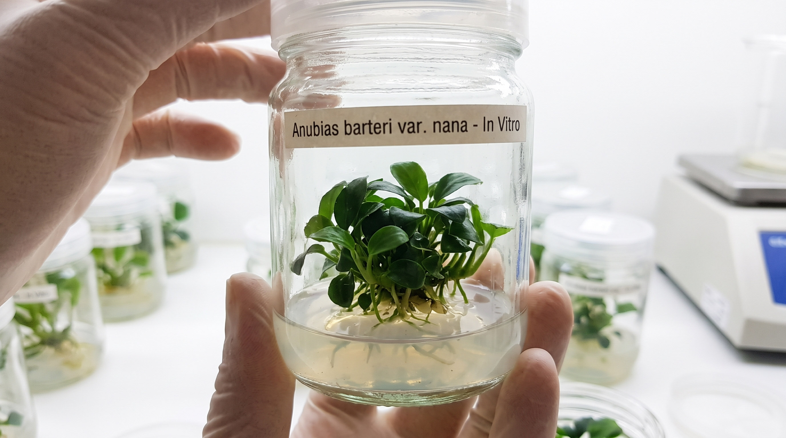
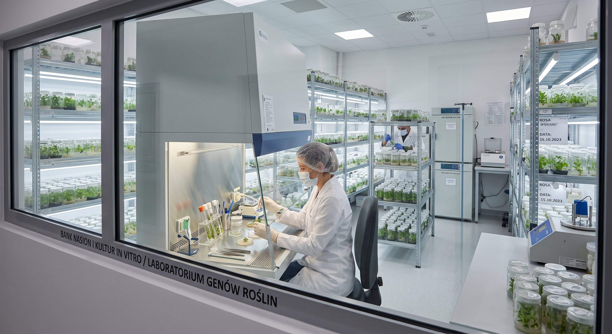

łatwa

20 dostępneAnubias barteri var. nana Anubias nana
Wolno rosnąca, znosi cień. Kłącze zostaje nad podłożem.
22 PLN
szt. · kubek 5×5
stan: .stock — dostępny
rozdz. 2.1–2.4 · 3A.1
Wartości hex czytane w locie z getComputedStyle — to, co widzisz,
jest realną wartością tokenu w tej skórce, a nie liczbą przepisaną z dokumentu.
Trzy kolumny stoją obok siebie niezależnie od tego, którą skórkę wybierzesz
na pasku; przełącznik zmienia resztę strony.
Nature & Future data-brand="nf"
Kamino BioLabs data-brand="kamino"
PomonaLab data-brand="pomona"
Tokeny wspólne :root
Różowy #C47B90 jest jedynym kolorem obecnym we wszystkich trzech
paletach — dlatego jest kolorem akcji w całym serwisie. Mosiądz nigdy nie jest
wypełnieniem, tylko linią, pierścieniem, wskazówką albo separatorem.
rozdz. 1
Cały serwis jest ciemny. Rytm robi się na poziomie sekcji, nie strony.
Trzy warianty poniżej to jedyne dopuszczone tła pasma — nie ma czwartego
i nie miesza się ich gradientem na styku. Odstęp pionowy ustawia
wyłącznie .section; wariant zmienia tło i kolor tekstu, nigdy padding.
Gradient --grad-deep, tekst --brand-100, szkło
.glass. Większość sekcji na stronie. Tło jest przypięte do
okna, więc dwie sekcje Deep pod sobą nie mają między sobą krawędzi —
i tak ma być.
znacznik: <section class="section"> · bez modyfikatora
Płaskie --brand-900 zamiast gradientu, tekst
--brand-300, nagłówki zostają w --brand-100.
Jeden na stronę, w miejscu, gdzie strona zmienia temat. Daje realną
krawędź tam, gdzie dwie sekcje Deep by się zlały, bez sięgania po drugą
jasną wyspę.
znacznik: .section.section--deeper
--paper z gradientem --grad-light, tekst
--ink, szkło .glass--light. Maksymalnie dwie
na stronę i nigdy obok siebie — między dwiema jasnymi wyspami stoją
minimum dwie ciemne sekcje. Rzadkość jest tu mechanizmem: pasmo dostaje
uwagę właśnie dlatego, że jest wyjątkiem.
znacznik: .section.section--light
Krawędź między pasmami jest ostra i wyraźna — zaokrąglone rogi
--radius-l, żadnego rozmycia gradientowego na styku.
Zaokrąglenie samo w sobie jest krawędzią.
rozdz. 4
.display-xl · hero · antykwa 400 ·
Rośliny hodowane od pojedynczej komórki
.h1 · antykwa 400 ·
Dwa laboratoria pod jednym dachem
.h2 · antykwa 500 ·
Jak rośnie w słoiku
.h3 · grotesk 600 ·
Warunki zamówienia
.lead · Body L · grotesk 400 ·
Roślina siedzi na żelu z pożywką, w zamkniętym słoiku, bez kontaktu z powietrzem z zewnątrz. Stąd bierze się brak glonów i pasożytów.
Body · tekst domyślny <p> ·
Po przesadzeniu roślina zrzuca liście i odbija w trzecim tygodniu — to normalny przebieg, nie choroba. Wiersz łamie się na 68 znakach, bo dłuższy męczy oko.
.small ·
kubek 5×5 cm · wysyłka w 48 h · zwrot w 14 dni
.latin + .specimen-name · nazwa gatunkowa zawsze kursywą antykwy, nad nazwą polską ·
Cryptocoryne wendtii Kryptokoryna wendta
.btn · rozdz. 6.1
Primary (różowy) występuje raz na ekran. Jeśli w widoku są dwa różowe
przyciski, jeden jest źle zaklasyfikowany. Stany hover i focus są tu wymuszone
klasami .is-hover / .is-focus, które w
nf-base.css i nf-components.css dzielą deklarację
z prawdziwym :hover i :focus-visible — nie ma
drugiego zestawu wartości.
Pierścień focusu jest w kolorze skórki (--focus na ciemnym,
--focus-strong na jasnej wyspie), nie różowy. Przełącz skórkę
na pasku, żeby zobaczyć, jak zmienia kolor. W realnym użyciu pokazuje się
tylko przy nawigacji klawiaturą — kliknięcie myszką go nie wywołuje.
.btn.btn--primary — tło --accent-strong, tekst biały, pill
.btn.btn--secondary — przezroczysty, border 1px --brand-500
.btn.btn--ghost — sam tekst, podkreślenie na hover
Warianty używane na stronie głównej, gdzie nie ma akcji na produkcie
.btn--fill · .btn--underline · .btn--outline
.btn--outline znika w jasnej wyspie i tak ma być: to przycisk nawigacji, zaprojektowany na biały outline na ciemnym materiale (6.3). Nie ma wariantu jasnego, bo nawigacja nigdy nie leży na papierze.
.card · rozdz. 6.2
Kropka przed stanem magazynowym: --brand-500 gdy dostępne,
--warn gdy ≤ 3 szt., --ink-muted gdy 0.
Kolor nigdy nie niesie informacji sam — obok kropki zawsze stoi liczba.
Karta jest .glass na ciemnej sekcji i .glass--light
wewnątrz jasnej wyspy; przełącznik na pasku podmienia obie klasy.

20 dostępneAnubias barteri var. nana Anubias nana
Wolno rosnąca, znosi cień. Kłącze zostaje nad podłożem.
22 PLN
szt. · kubek 5×5
stan: .stock — dostępny
 2 sztuki
2 sztuki
Cryptocoryne wendtii Kryptokoryna wendta
Brązowo-zielona, średnie tempo wzrostu. Po przesadzeniu zrzuca liście.
18 PLN
szt. · kubek 5×5
stan: .stock--low — mało sztuk (≤ 3)
 0 dostępnych
0 dostępnych
Hemianthus callitrichoides Hemianthus
Dywanowa, wymaga CO₂ i mocnego światła. Następna partia w marcu.
24 PLN
szt. · kubek 5×5
stan: .stock--out — wyprzedany
Wariant strony głównej: zdjęcie i treść obok siebie
Cryptocoryne wendtii Kryptokoryna wendta
Brązowo-zielona, średnie tempo wzrostu.
18 PLN
kubek 5×5 cm · 12 dostępnych
.card.card--split + .badge
.facts · .gauge · rozdz. 3A.2
Tarcze są wycofane z obecnych stron. Strona główna, /kamino i /pomona używają samego paska faktów — liczba plus podpis, bez tarczy. Ten komponent zostaje w systemie jako rezerwa i wraca wyłącznie przy realnych danych pomiarowych (dashboard laboratoryjny, odczyty z komory, widok partii). Nie brać go z powrotem na strony marketingowe, gdzie liczba nie ma skali.
Skala biegnie od -120deg do 120deg i jest zaznaczona
dwiema kreskami podziałki. Trzy wartości poniżej mają różne wychylenia, więc
widać, że wskazówka faktycznie coś mierzy. Jeśli liczba nie ma skali, wskazówka
jest ozdobą — wtedy lepiej użyć zwykłej liczby bez tarczy.
W skórce Kamino mosiądz zamienia się na --brand-300 (3A.4).
48 hwysyłka zamówień
100 %klonów in vitro
14dni na zwrot
wychylenia: 40deg · 120deg · -8deg — kąt bierze się z atrybutu data-angle
.glass · .glass--light · rozdz. 3
Szkło jest materiałem, nie ozdobą. Pod nim musi coś być — zdjęcie, gradient, roślina; na jednolitym tle to zwykły szary prostokąt. Dlatego oba przykłady leżą na materiale. Ten blok jako jedyny ignoruje przełącznik jasna/ciemna: każdy wariant szkła pokazujemy na tle, do którego należy.

Szkło deep
Tło --glass-bg, blur 18px, saturate 130%, obramowanie 1px
i wewnętrzny biały highlight. Domyślne na ciemnych sekcjach.
.glass na ciemnym materiale · rozdz. 3
Szkło light
Biel 62%, blur 16px, obramowanie białe 75%. Wyłącznie wewnątrz jasnych wysp — na ciemnej sekcji robi mleczną plamę.
.glass--light na jasnej wyspie · rozdz. 3
.field · .input · rozdz. 6.5
Focus musi być widoczny w obu wariantach sekcji: obramowanie w kolorze skórki plus pierścień. Błędy mówią co się stało i co zrobić — „Podaj adres e-mail z @”, nie „Nieprawidłowa wartość”. Bez przepraszania.
stan: domyślny
stan: focus (wymuszony klasą .is-focus)
Podaj adres e-mail z @
stan: błąd — .input--error + .field__error
stan: disabled
.input.input--area — pole wieloliniowe, wysokość zmieniana tylko w pionie
.anno · rozdz. 6.4
Pływająca etykietka ze szkła, połączona linią 1px i kropką 8px z punktem na
zdjęciu. Max trzy na obraz. Treść to zawsze konkret: liczba, parametr, fakt —
nie hasło marketingowe. Kierunek kreski ustawia .anno--left
albo .anno--right; w pasmie edukacyjnym robią to kolumny
.edu__col--left / --right.
Eksplantat startowy ma 3–5 mm — sam wierzchołek wzrostu.
.anno.anno--left — kreska i kropka w prawo
Pożywka: agar 7 g/l, sacharoza 30 g/l.
.anno.anno--right — kreska i kropka w lewo
.rule-rivet · rozdz. 3A.3
Linia 1px z okrągłym nitem na środku. Max dwa na stronę — razem z tarczami wskaźników wchodzą w limit dwóch mosiężnych elementów na widok ekranu.
znacznik: <hr class="rule-rivet">
.steps · .step · rozdz. 6.6
3–4 kroki w poziomie, połączone cienką linią z kropkami. Linia i kropka biorą
--instrument, więc w NF i Pomonie są mosiężne, a w Kaminie
przyrządowo błękitne — przełącznik skórki wystarcza. Kropka jest obrysem
1.5px, nigdy wypełnieniem. Poniżej 760px kolumna się prostuje i linia staje
pionowo po lewej. Nagłówek kroku dziedziczy krój po skórce: antykwa w NF,
grotesk z ciasnym trackingiem w Kaminie, kapitaliki w Pomonie.
01
Wierzchołek wzrostu 3–5 mm pobrany z rośliny matecznej.
02
Kąpiel odkażająca i płukanie w wodzie jałowej.
03
Pasaże na pożywce co kilka tygodni, w komorze ze stałym światłem.
04
Wyjście ze słoika do podłoża, przy stopniowo obniżanej wilgotności.
kropka i linia: --instrument / --instrument-dim
.backbar · rozdz. 6.7
Zamyka każdą podstronę sub-marki (7A, pkt 7). Sub-marka nie ma własnej nawigacji, więc to jedyne wyjście z niej w górę. Jedno zdanie i jeden link, nigdy różowy — róż jest zarezerwowany dla jednego CTA na stronie.
znacznik: <div class="backbar glass">
.nav · rozdz. 6.3
Nawigacja ma dwa stany. Nad hero leży wprost na materiale, bez tła
i bez obramowania — czytelność daje welon .nav::before, pasmo
--scrim schodzące do zera. Po przescrollowaniu wysokości hero
zwija się w wyśrodkowaną pigułkę ze szkła i welon gaśnie, bo czytelność
przejmuje szkło. Przejście 250 ms.
Poniżej oba stany zamrożone obok siebie; w ramce nawigacja jest
position: absolute zamiast fixed, poza tym
to ten sam kod.
stan: nad hero — przezroczysta, welon .nav::before
stan: zwinięta — .nav__inner.is-pinned, szkło nawigacyjne
„Zamów rośliny" celowo nie jest różowy. Różowy zostaje dla akcji na konkretnym produkcie — gdyby siedział w nawigacji na każdym ekranie, przestałby cokolwiek znaczyć. Biały outline na ciemnym tle jest równie widoczny, a nie zjada akcentu.
.hero · rozdz. 7.1
Dwa warianty. Strona główna: 72vh, nagłówek Display XL w dolnej trzeciej
kadru, bez podtytułu i bez przycisku w środku — rolę CTA przejmuje
nawigacja. Podstrony sub-marek .hero--sub: niższe (52vh),
z nadtytułem i jednym zdaniem pod nagłówkiem, bez animacji wjazdu.
W podglądzie wysokość jest przycięta; reszta to ten sam kod.
.hero — strona główna, materiał wideo, nagłówek u dołu
Kamino BioLabs
Laboratorium kultur in vitro i bank genotypów.
.hero.hero--sub — podstrona sub-marki, nadtytuł + lede
Gradient czytelności .hero__scrim bierze --scrim
z tokenów, nie zieleń wpisaną na sztywno — inaczej Kamino dostałoby zielony
welon na błękicie. Przy prefers-reduced-motion wideo ustępuje
miejsca .hero__still: tej samej klatce jako obrazkowi.
.panel · .panel-nav · .table · .status · .empty · .skeleton · .modal · .num · rozdz. 8A
Panel jest narzędziem: odstęp --space-l zamiast pasm
marketingowych, nagłówki groteskiem do H2, zero mosiądzu, zero jasnych
wysp. Róż pojawia się raz na ekran i tylko na akcji głównej danego widoku.
.status — kropka koloru jest dodatkiem do słowa, nigdy zamiast niego
W realizacji
.status.status--progress — kropka --warn
Wysłane
.status.status--sent — kropka --brand-300
Dostarczone
.status.status--delivered — kropka --brand-500
Anulowane
.status.status--cancelled — kropka --error
.progress — postęp realizacji: ptaszek dla etapu przebytego, kropka dla bieżącego
Stan nie zależy od koloru: etap przebyty ma ptaszek, bieżący wypełnioną
kropkę, przyszły jest pusty. Bieżący niesie aria-current="step",
a każdy etap ukryty tekst stanu. Poniżej 560px pasek prostuje się w pion.
Wariant .progress--cancelled wygasza cały pasek — anulowane
zamówienie nie idzie dalej.
.input-action · .checkbox · .divider — uzupełnienia rozdz. 6.5 dla ekranów logowania
.input-wrap + .input-action — przycisk w polu;
aria-label mówi, co zrobi, aria-pressed niesie stan
.checkbox — prawdziwy <input type="checkbox">
z accent-color, nie podrobiony <span>
lub
.divider — kreska, słowo, kreska
.table — wiersz 52px; poniżej 760px zamienia się w listę kart, nie w poziomy scroll
| Zamówienie | Data | Pozycje | Kwota | Status |
|---|---|---|---|---|
| NF-0156 | 18.08.2026 | 3 | 189,00 zł | Wysłane |
| NF-0151 | 02.07.2026 | 1 | 64,00 zł | Dostarczone |
Nagłówki mają scope="col", a każda komórka data-label —
etykieta wraca wtedy w wariancie kartowym. Klikalny jest link w pierwszej
komórce, nie onclick na wierszu: inaczej wiersza nie da się
otworzyć klawiaturą ani skopiować adresu.
Nie masz jeszcze żadnych zamówień.
Zobacz rośliny.empty — jedno zdanie, jedno wyjście. Bez ilustracji.
.skeleton — bloki --brand-800, bez spinnera
i bez animowanego połysku
.num — numery, kwoty, daty i ilości stoją w kolumnie
NF-0156
1 240,00 zł
18.08.2026
×3
.num — --font-mono +
lining-nums tabular-nums
NF-0156
1 240,00 zł
18.08.2026
×3
bez .num — cyfry o różnej szerokości, kolumna się rozjeżdża
.modal — potwierdzenie z nazwą tego, co ginie, i czasownikiem skutku
.modal na <dialog> — pułapka focusu
i zamknięcie Esc są zachowaniem przeglądarki, nie kodem do napisania
.drawer — wysuwka boczna na <dialog>, uzyta jako koszyk
.drawer na <dialog> — trzy pasy:
nagłówek i stopka stoją, środek się przewija, więc suma i przycisk kasy
są widoczne niezależnie od długości listy. Poniżej 480px zajmuje pełną
szerokość ekranu.
.panel + .panel-nav — lewa kolumna 240px, .glass, przyklejona
Wysłane · 18.08.2026 · 189,00 zł
Poniżej 900px kolumna chowa się pod .panel-nav__toggle i wysuwa jako panel ze szkła. Nagłówek serwisu zostaje ten sam co na stronach — powrót do sklepu ma być jednym kliknięciem.